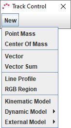
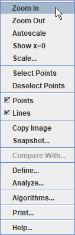
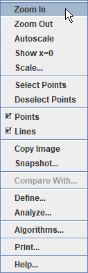
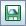
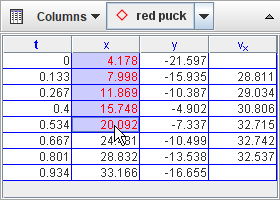

When you first open Tracker it appears as shown below. Here's how to start analyzing a video:
Note that the order of the buttons on the toolbar mirrors the steps used to analyze a video. For more information about Tracker's user interface, including user customization, see user interface.
To open a local video, tracker tab (.trk), or tracker project (.trz) file, click the Open button  or File|Open File menu item and select the file with the chooser, or drag and drop the file onto Tracker. You can also open still and animated image files (.jpg, .gif, .png), numbered sequences of image files, and images pasted from the clipboard.
or File|Open File menu item and select the file with the chooser, or drag and drop the file onto Tracker. You can also open still and animated image files (.jpg, .gif, .png), numbered sequences of image files, and images pasted from the clipboard.
To open classroom-tested videos and tracker files from the web, click the Open Library Browser button or choose the File|Open Library Browser menu item. The library browser, shown below, enables you to browse and search collections of digital resources with full descriptions and metadata. For help using the Library Browser, choose its Help|Library Browser Help menu item.
Display the clip settings by clicking the Clip Settings button  on the toolbar.
on the toolbar.
In the clip settings dialog, set the Start frame and End frame to define the range you wish to analyze. You can drag the video player slider to scan through the video and quickly find the frames of interest. If the motion of the object to be tracked is slow, increase the Step size to automatically skip frames.
You can also set these video clip properties directly on the video player. For more information see video clips.
The clip settings dialog is also where you can set the custom frame dt (seconds per frame) or, equivalently, frame rate (frames per second) for high-speed or time lapse videos.

Click the Calibration button  and create a new calibration stick. The calibration stick has a default length of 1.0 m and position near the center of the video. Drag the ends of the stick to the ends of an object in the video with a known length located in the same plane as the motion to be tracked. Then click the calibration stick readout and enter the known length (plus different units if desired). For example, in the figures below the stick length (initially 100 with no units) is set in meters using a video image of a white PVC pipe with black stripes every 10 cm.
and create a new calibration stick. The calibration stick has a default length of 1.0 m and position near the center of the video. Drag the ends of the stick to the ends of an object in the video with a known length located in the same plane as the motion to be tracked. Then click the calibration stick readout and enter the known length (plus different units if desired). For example, in the figures below the stick length (initially 100 with no units) is set in meters using a video image of a white PVC pipe with black stripes every 10 cm.


For more information see calibration stick, or for an alternate way to calibrate the video consider a calibration point pair.
Click the Axes button  to show the coordinate axes. Drag the origin and/or x-axis to set the reference frame origin and angle. A common choice for the origin is the initial position of an object of interest. For more information see axes, or for alternate ways to set the origin and/or angle consider a calibration point pair, an offset origin or the calibration stick.
to show the coordinate axes. Drag the origin and/or x-axis to set the reference frame origin and angle. A common choice for the origin is the initial position of an object of interest. For more information see axes, or for alternate ways to set the origin and/or angle consider a calibration point pair, an offset origin or the calibration stick.


The scale and reference frame origin and angle uniquely define the coordinate system used to convert pixel image positions to scaled world coordinates. In some videos the coordinate system properties may vary from one frame to the next (e.g., if the camera is zoomed the scale will change, or if panned the origin will change). Tracker makes it relatively easy to analyze such videos--see coordinate system for more information.
Click the Track Control button , then New, and choose a track type from the popup menu. Most moving objects are tracked using a Point Mass track or modeled using a Dynamic Model track.

To track an object manually with a point mass, mark its position on every frame by holding down the shift key and clicking the mouse (crosshair cursor) as the video automatically steps through the video clip. Don't skip frames--if you do, velocities and accelerations cannot be determined.
Tracks may also be marked automatically using autotracker.
You can always adjust a marked position later by dragging it with the mouse or selecting it and nudging with the arrow keys. Zoom in for sub-pixel accuracy.

To model an object with a dynamic model, enter values and expressions into the Model Builder as shown below. The particle will automatically draw itself on the video when played.

You can change the name and appearance of a track by clicking its button on the track control and choosing from the popup menu as shown at left below. Click the Visibility button on the toolbar to control other display properties including velocity and acceleration vectors.


For more information on tracks and the track control, see tracks. For detailed information on a specific track type, see point mass, center of mass, vector, vector sum, line profile, rgb region, particle model or two-body system.
The Plot View displays graphs of track data. Click the x- or y-axis label to change the variable plotted on that axis. To plot multiple graphs, click the Plots button and select the desired number. Right-click on a plot to access display and analysis options in a popup menu.


 

Two of the most powerful analysis options available from the popup menu are Define... and Analyze....


Click the Save Tab button  or File|Save Tab As... menu item to save your work in an Tracker tab file with extension ".trk". When a saved Tracker tab file is opened, Tracker loads the video, sets the clip and coordinate system properties, and rebuilds all tracks, custom variables and views. Note that a Tracker tab file does NOT include the video itself, only a reference to the video. For more information see Tracker tab files.
or File|Save Tab As... menu item to save your work in an Tracker tab file with extension ".trk". When a saved Tracker tab file is opened, Tracker loads the video, sets the clip and coordinate system properties, and rebuilds all tracks, custom variables and views. Note that a Tracker tab file does NOT include the video itself, only a reference to the video. For more information see Tracker tab files.
Click the Save Project button  or File|Save Project As... menu item to save your work in an Tracker project file with extension ".trz". Tracker projects are the best way to save and share your work since they DO include the videos along with PDF and/or HTML documentation and thus are fully self-contained. With searchable keywords and other metadata, you can browse and find projects easily with the Library Browser. For more information see Tracker projects.
Tracker's Datatable View displays track data in a table. To change the variables included in the table, click the Columns button and select from the list displayed.
Data can be easily exported from the datatable by copying to the clipboard and pasting into a spreadsheet or other application. To copy, select the desired data in the table, then right-click and choose Copy Data from the popup menu. For more information see datatable view.



You can print or copy an image of the entire Tracker frame or any individual view (e.g., a plot or datatable). To print the entire frame (all visible views), choose the File|Print... menu item. To print an individual view, right-click the view and choose Print... from the popup menu. To copy an image, choose the desired view from the Edit|Copy Image menu or right-click a view and choose Copy Image. Pasting printed or copied images into notes and reports is an excellent way to document your video analysis results.
To save an image, right-click on the view of interest and choose the Snapshot menu item. Then choose the File|Save Image menu item in the snapshot window.